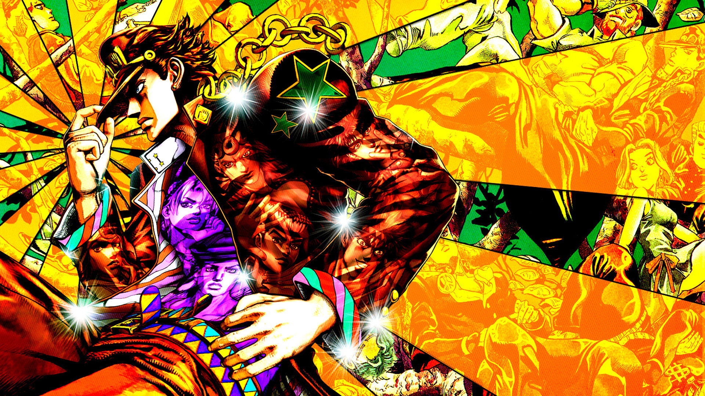
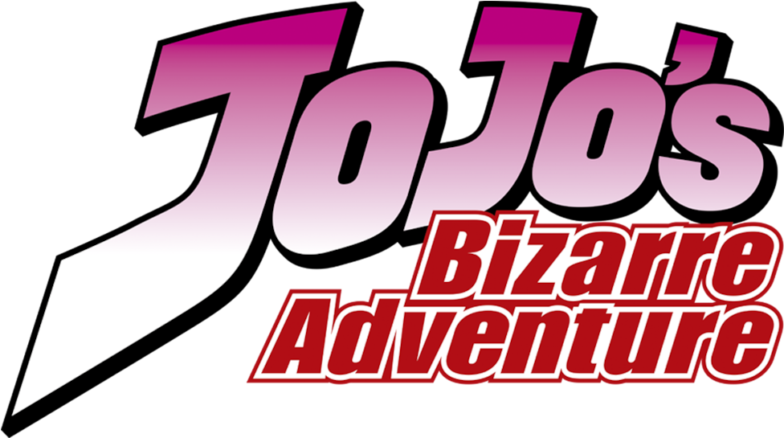

JoJo's Bizarre Adventure (JoJo no Kimyo na Boken) é um anime diferente de tudo àquilo que você já pode ter assistido! A forma artística como os personagens e todos os ambientes foram desenvolvidos fazem com que este anime seja uma experiência única! Mas a quantidade de diferentes protagonistas e vilões também pode confundir quem está conhecendo o anime agora.
Assista aqui